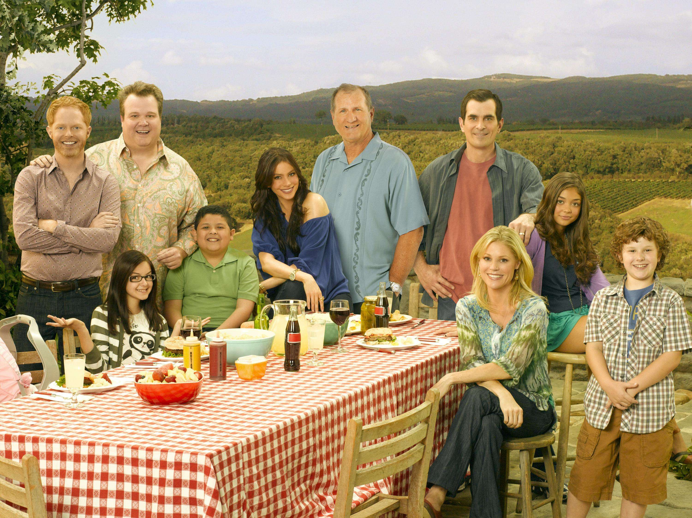

三个家庭。 一对普通父母与三个孩子组成的常规家庭：女主人Claire为了照顾孩子们辞去工作，专心当一名家庭主妇；男主人Phil 是一名房地产经纪人，是家庭主要的经济来源；大女儿Haely拥有美丽面孔，热爱社交，情史丰富；二女儿Alex被公认为书呆子，从小到大学习拿全A,是全家的智商担当；小儿子Luke比姐姐们小许多，天真傻萌。一对同性恋夫夫——Mitchell与Cameron从越南领养了一个女婴Lily组成三口之家。一个60岁的老头Jay迎娶了位热辣的哥伦比亚美女Gloria，美女还带着个捣蛋的11岁胖儿子Manny。最奇妙的是，他们其实是一个大家庭——Jay是Claire和Mitchell的父亲。对，以上所述是第一季的情况，随着九年时间悄悄流淌，剧集中的人物都发生了或多或少的变化。
时间的流逝在在老人和孩子身上展现得最为明显。老头Jay变得更老，孩子们长大，新生命诞生（Joe）。为了保持神秘感，这里就不放九年后的图片了。这就是连续拍很多季的家庭剧的魅力所在，你会觉得你跟着剧中的人物（也可以说是演员）一起长大、成熟，亦或变老。你期待看到他们将来的样子，但又希望时间永远停在这里，不要长大，不要变老，不要离去。没有预先设定的笑点，笑点很多时候也是泪点，泪点又往往会让你含泪微笑。正如大女儿Haely的第一任男友Andy在第一季第一集里所说：我从没有见过你们这样千奇百怪又互相包容的大家庭。疯子、同性恋等等在一起，可是又相互理解，真的很温馨。这么幸福的家庭，是很多人艳羡的吧。
幸福的家庭似乎根本没有我们很多人的家庭中无时不在的矛盾。
但是，错了。这部剧中，家庭的复杂性决定了矛盾的复杂性：夫妻之间的，父母与孩子之间的，兄弟姐妹之间的，公婿之间的，妯娌之间的、舅甥之间的……矛盾产生并不是因为“不爱”，而正是因为彼此间太亲近，太在意，才会有矛盾。幸福家庭与不幸福家庭的根本不同就在于：在幸福家庭里，当有矛盾时，不管过程多么周折，有矛盾的各方最终总能理智地平息矛盾，重归于好。而不幸福的家庭，总是用错误的、暴力的方式来对待，以为这样可以解决或者逃避问题，悲剧就这样从某个时刻开始上演，且愈演愈烈。

聪明的家人知道——矛盾并没有必要被完全消灭，因为即使是一家人，每个人的利益都不会完全一致，但他们相信：即使存在这些潜在的冲突，我们依然可以一起好好生活。没有绝对好的原生家庭，成长是我们自己一辈子要去完成的事。可能有人会觉得这部剧里的家庭如此幸福美满、家人如此善良睿智都是因为西方教育孩子的方式很好，他们的原生家庭很好，所以好的家庭基因会一代代地传承下去——因为有一种火热的理论：原生家庭对孩子的影响巨大，不美好的原生家庭会毁了一个孩子的一生。
于是，有很多还没有组建自己家庭的人都会觉得自己这一辈子不可能会有一个好家庭，而已经组建了自己的家庭而家庭不美满的人会把锅扔给自己的原生家庭。

虽然是戏剧，但或许能给我们一些力量。有时候会有这么一天，虽然你周围全是人，你仍然觉得很孤独。你唯一想做的就是回家去得到家人的慰藉。但是有时候，即使你的家人也不能给你那种安慰，因为他们都有过这样的一天。 你所能做的就是等待那样的日子结束。所以你可以去睡觉了，期待醒来会是更好的一天吧。感谢这部剧让我在人生中灰暗的一段时间与它相遇，给我快乐。我曾以为这部剧里的演员在戏外一定也有着快乐的家庭，但是戏剧是戏剧，生活是生活。